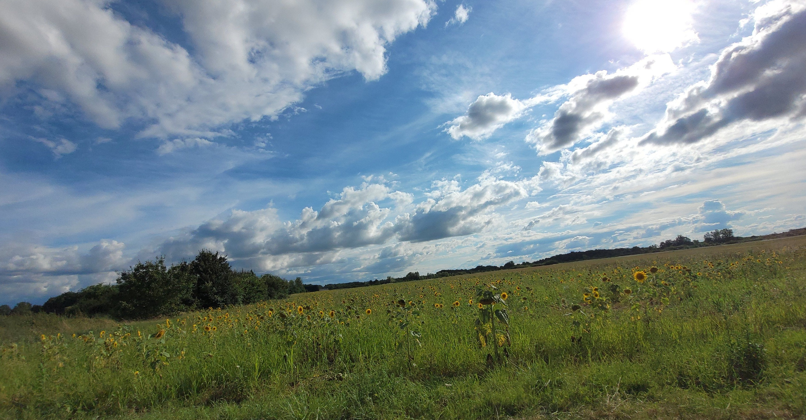

Lune
Accueil
Photos
Matériel
Widget

Comment j'observe la lune
Voici le matériel utilisé.
Tout y est détaillé.
Celestron NexStar 90
Télescope · Maksutov-Cassegrain
Ouverture
90 mm
Focale
1 250 mm
Rapport
f/13,9
Pour observer les détails de la Lune, nuit après nuit.
Kit de filtres
& oculaires